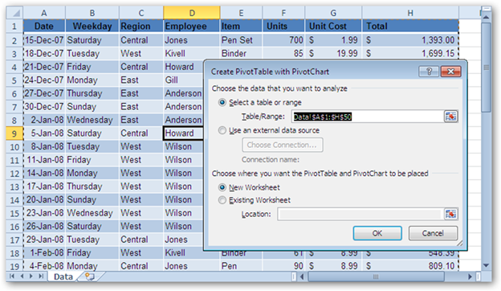
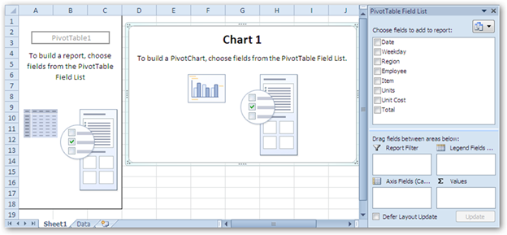
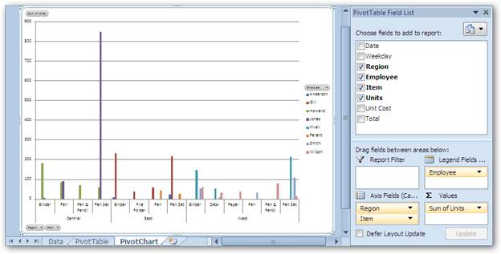

PivotCharts are interactive graphical representations of the PivotTable data that allows rapid analysis of the displayed data. PivotTable is an Excel feature that helps in summarizing large volume of data such as stock market report, Cash flow report etc. A PivotTable can aggregate data instead of analyzing rows upon large volume of records and with a few clicks the PivotChart allows rapid, dynamic, and flexible data analysis. The following sections describe the creation of PivotTables and PivotCharts.
PivotTable Creation
Kindly refer to the following topic for PivotTable creation:
PivotChart Creation Using MS Excel 2010
In Microsoft Excel, the PivotChart can be created using the PivotChart Option from the Insert menu. Refer to Figure 96:PivotChart Creation.

Figure 93: PivotChart Creation Dialog Box
By default, MS Excel selects the entire range. However, it is possible to modify the selected range if required. It also allows choosing the position of the PivotChart (New Worksheet is most commonly used to place the PivotChart).

Figure 94: New Sheet to place the PivotTable and PivotChart
Once you select a field, the PivotTable and the PivotChart appear. PivotTable and PivotChart should be popoulated with data fields, which appear on the field list on the right. Fields can be dragged to the PivotTable grid, to one of the defined areas and also there is an option to move the created PivotChart to a separate sheet.

Figure 95:Adding fields to the PivotChart
PivotChart Creation Using XlsIO
XlsIO provides support for the creation of PivotTables and PivotCharts by using simple code snippets. IPivotCache interface caches the data that need to be summarized when filtering. IPivotTable represents a PivotTable in object, and has properties that allow customizing it. IPivotTable interface returns the collection of PivotTables that are present in a worksheet. IPivotField represents the field in the PivotTable. This includes row, column and data field axes. IPivotDataFields get a collection of the data field and once the PivotTable is created, it is required to create a PivotChart by setting the PivotSource property of the IChart interface, which references the created PivotTable.
Note: PivotTable and PivotChart are currently not supported for .xls format.
The following code example illustrates the creation of a PivotTable and PivotChart by using XlsIO.
|
[C#]
// Insert the Pivotchart sheet to the workbook. IChart pivotChartSheet = workbook.Charts.Add();
// Set the PivotSource for the Chart. pivotChartSheet.PivotSource = pivotTable;
// Select the PivotChart type. pivotChartSheet.PivotChartType = ExcelChartType.Column_Clustered;
|
|
[VB]
'Insert the Pivotchart sheet to the workbook Dim pivotChartSheet As IChart = workbook.Charts.Add()
'Set the PivotSource for the Chart. pivotChartSheet.PivotSource = pivotTable
'Select the PivotChart type. pivotChartSheet.PivotChartType = ExcelChartType.Column_Clustered
|
PivotChart Options
The field buttons of the PivotChart can be displayed or hidden by selecting PivotChart Tools->Analyze->Field Buttons. XlsIO provides an equivalent API to perform simple properties as follows:
Note: These properties are exclusive for Excel 2010.
|
[C#]
pivotChartSheet.ShowAllFieldButtons = false; pivotChartSheet.ShowAxisFieldButtons = false; pivotChartSheet.ShowLegendFieldButtons = false; pivotChartSheet.ShowReportFilterFieldButtons = false; pivotChartSheet.ShowValueFieldButtons = false; |
|
[VB]
pivotChartSheet.ShowAllFieldButtons = False pivotChartSheet.ShowAxisFieldButtons = False pivotChartSheet.ShowLegendFieldButtons = False pivotChartSheet.ShowReportFilterFieldButtons = False pivotChartSheet.ShowValueFieldButtons = False |
Properties
Table 2: Properties Table
|
Property |
Description |
Type |
Data Type |
Reference links |
|
PivotSource |
The Pivot source will accept the object of the IPivotTable, which will be the source for the Pivot chart sheet. This property is responsible for the Pivot chart creation. |
Public property |
IPivotTable |
NA |
|
PivotChartType |
The PivotChartType property decides the type for the created Pivot chart. It accepts all the chart types supported by MS Excel. |
Public property |
ExcelChartType |
NA |
|
ShowAllFieldButtons |
It displays all the field buttons of the Pivot chart. |
Public Property |
True/false |
NA |
|
ShowAxisFieldButtons |
It displays all the axis area fields as buttons in the Pivot chart with filtering options for the axis field values. |
Public Property |
True/false |
NA |
|
ShowLegendFieldButtons |
It displays all the legend area fields as buttons in the Pivot chart with filtering options for the legend field values. |
Public Property |
True/False |
NA |
|
ShowReportFilterFieldButtons |
It displays all the Report filter area fields as buttons in the Pivot chart with filtering options for the Report filter field values. |
Public property |
True/False |
NA |
|
ShowValueFieldButtons |
It displays all the Values area fields as buttons in the Pivot chart with filtering options for the Values area fields. |
Public property |
True/False |
NA |
Sample Link
To understand this process, consider the sample project:
\EssentialStudio\*.*.*.* \Windows\XlsIO.Windows\Samples\2.0\Business Intelligence\Pivot Chart.
Note: It is mandatory to have Essential XlsIO installed. MS Excel is not required.